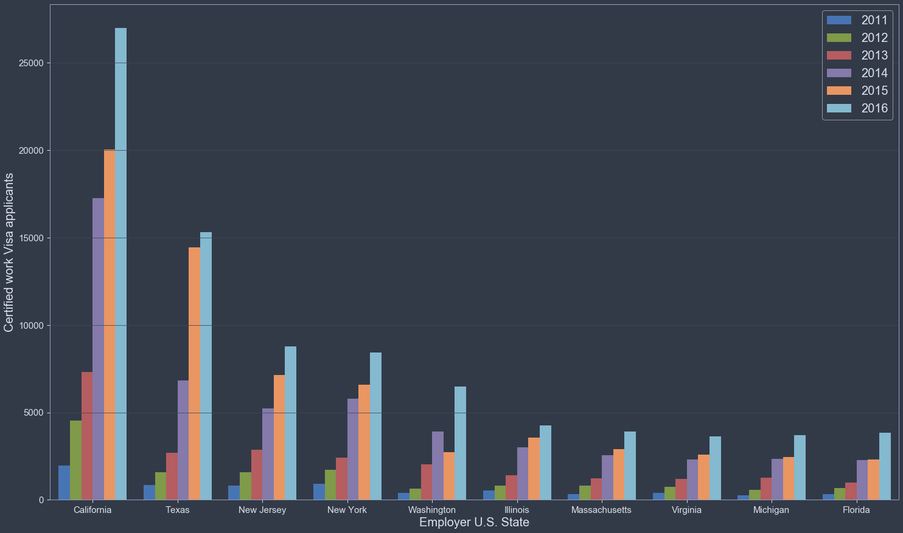
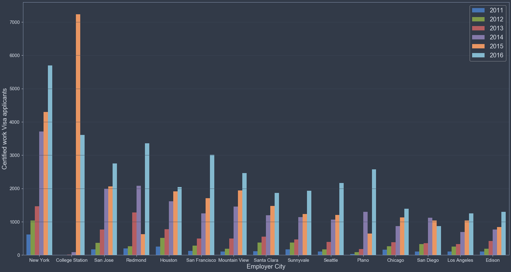
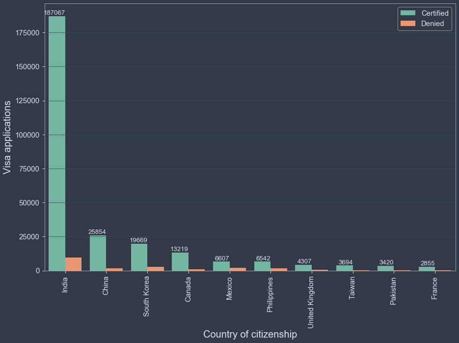
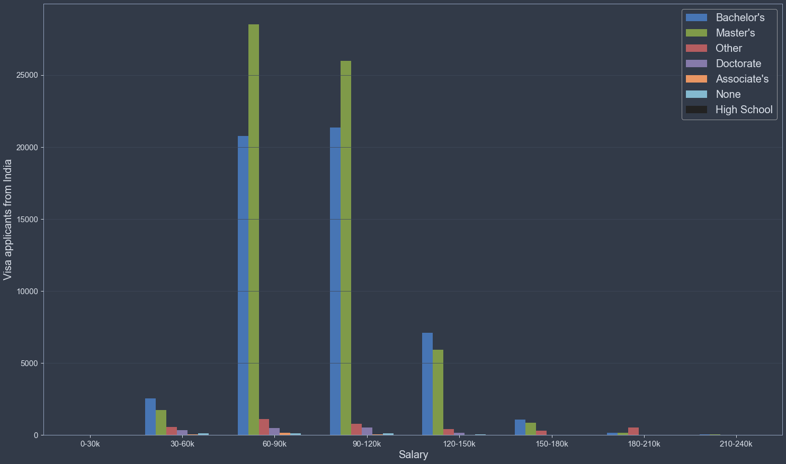

US Visa Geographical Information

It is no surprise that California has the highest applicant rate considering the entire population of California is larger than all of Canada. Texas is also a popular destination for immigrants with the industry blossoming over there. The two neighboring states of New York and New Jersey also appear to be popular destinations. Immigration destinations appear to be coast heavy with mainland states not holding as many opportunites. Lets take a closer look from a city base perspective...

In relation to the plot of states above, more of a story can be told when looking at cities. California has an even spread of popular cities around its state. Whereas, residence in New York State and New Jersey seem to congregate in New York City. In state graph washington was a high runner up and it appears all incoming immigrants to the state reside in Redmond. College station in Texas has had the largest immigration boom out of all cities with a majority of applicants arriving in 2015. Plano Texas had a smaller scale boom in 2016. San Diego appears to be the only city with a decline of incoming immigrants.

A monumental portion of applicants are coming from India, this is some what to be expected since India holds a large country population, however China has an even larger country population but barley even comes close to India's applicant number.

Of these applicants from India, most are very well educated and on average will earn more than US citizens. It can be assumed "Other" are medical field degrees based on the dataset. In accordance with the high volume of applicants, it can be assumed that the best and brightest from India are leaving for a better life since their own country does not appear to facilitate their skills and education.